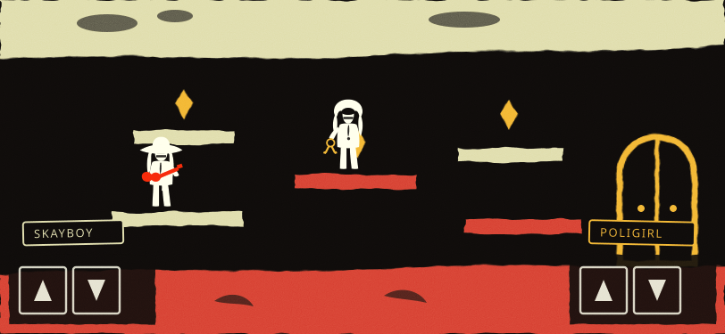
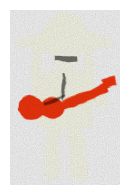
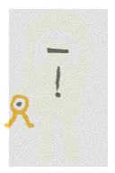

Ensayo — Skayboy y Poligirl
Un personaje quieto y un terreno, dibujados a mano, sin motor y sin física.
No es una pantalla del sitio y no promueve IDEA-14.
Contesta una sola pregunta: si esto se ve como este sitio.
Lo que esta lámina sí contesta: si un sprite se puede dibujar en el
idioma del proyecto sin caer en el vector liso que veta
public/arte/README.md. El borde no es una curva limpia: es una curva
desplazada por ruido, que es como se rompe un papel recortado a mano.
Lo que no contesta: cuánto dura un nivel, si el esquema de dos manos
funciona en la mano, y si el juego cierra en dos o tres minutos. Eso se mide, no se mira.
La pantalla, a 812 × 375

Arriba el cielo, abajo el infierno, y la puerta que se abre de a dos — que es el
molinete de D-14 puesto al derecho. Las plantillas de la izquierda son de
uno y las de la derecha del otro: los caminos se cruzan y ninguno llega solo. Las dos
planchas oscuras de abajo son las zonas de pulgar, una por punta del teléfono, con las
teclas al piso de 48 px que el proyecto ya usa.
Las dos figuras, al mismo peso

Sombrero, pelo atado, SG roja

La mata de pelo, el llavero
48 px
48 px
Ninguno tiene cara: los anteojos son una barra. Es la baranda 2 de D-38 —
se dibuja por insignia y no por parecido, porque cuanto más se parece a la insignia que
ellos mismos exhiben, más lejos queda del derecho a la imagen.
Hallazgo, medido y no supuesto: el borde de tijera es
feTurbulence + feDisplacementMap, y
sharp no lo sabe hacer. Se probó el 2026-09-11 rasterizando
estas dos figuras a 256×384 con el sharp que ya trae el repo como
dependencia transitiva de Astro: librsvg no implementa feDisplacementMap y
devolvió la silueta plana, sin borde y con el grano convertido en un rectángulo gris.
Los PNG se borraron.
Consecuencia para el día que esto sea un juego: el sprite que llega al teléfono va
rasterizado —es lo que public/arte/README.md ya pide, PNG y no vector—,
pero el paso de rasterizar necesita un motor que sí soporte filtros SVG:
un navegador, o la herramienta del usuario en su máquina, igual que los recortes de
audio de D-06. No hay hoy en el repo con qué hacerlo desatendido.
Sobre los dos pisos: ¿siguen siendo legibles?
La tinta marfil está calibrada para --fondo. Sobre el papel del cielo casi
desaparece, y ese es el segundo hallazgo: es el mismo problema que D-21
resolvió para las tapas con un velo plano, y que contraste.test.ts no puede
medir, porque mide pares de CSS y acá el fondo es una superficie dibujada.